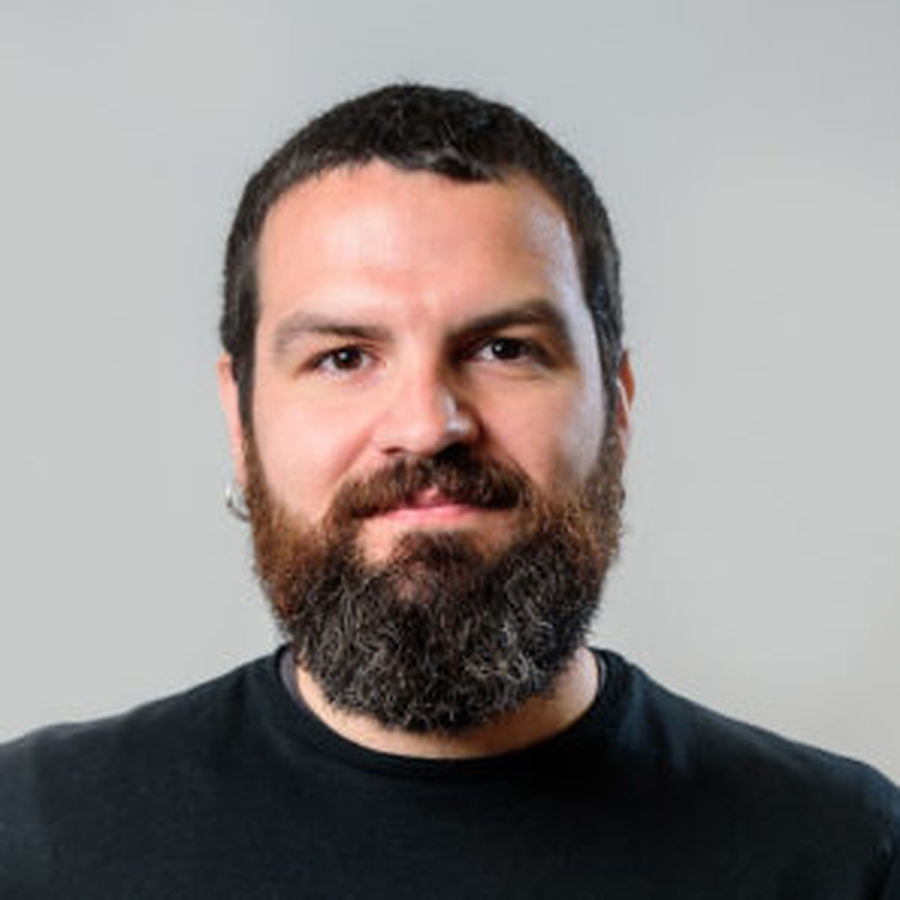

Marc Cerdà i Domènech
@elpiratavell
Assistant Professor · University of Barcelona
PhDMarine Sciences
16Articles
279Citations
7h-index
I am an environmental scientist, lecturer at the University of Barcelona and researcher in marine geosciences. I study metal and metalloid pollution from Antarctica to the Arctic, by way of the Mediterranean, to understand how human activity alters the oceans. I advise public administrations and environmental consultancies on integrated coastal management, and I take part in the media to connect science and public policy.
“Science is much more than a body of knowledge. It is a way of thinking.”Carl Sagan
Latest blog post
Subscribe to the blog
Get new posts on marine science, climate and environmental policy straight to your inbox. Posts are written in Catalan.
Subscribe